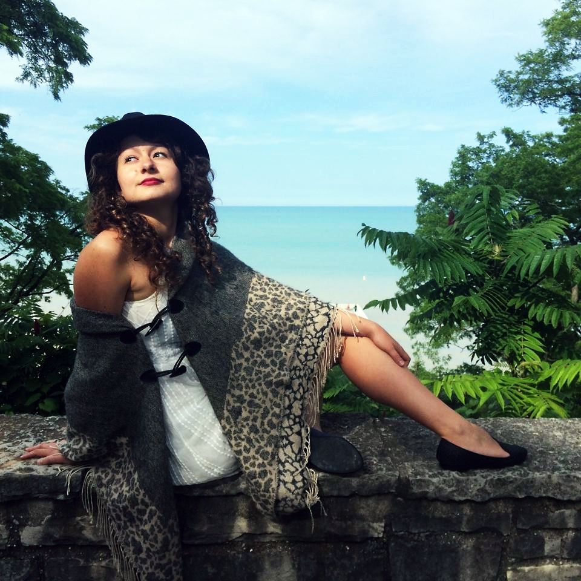

Who is Alex !?
Business first... I am from Poland. I was born in the city where during world war 2 was the biggest concentration camp. I have 1 sister and 1 dog. If would have to pick one I would pick the dog. What do I do when nobody watches... Since childhood I am interested in exploring and acquiring new experience. One of my hobbies is hitch-hiking, mainly in Europe. Beside it I like swimming, running and climbing. Edu..edu..education So far I finished high-school and took 1.5 of gap year full of intercepts and professional experience. Is how I ended up with coding and Devbootcamp. Going back to education in February, moving to Denmark. Quirky stuff I believe people have soul. Beside this I feel like time is running to fast. 